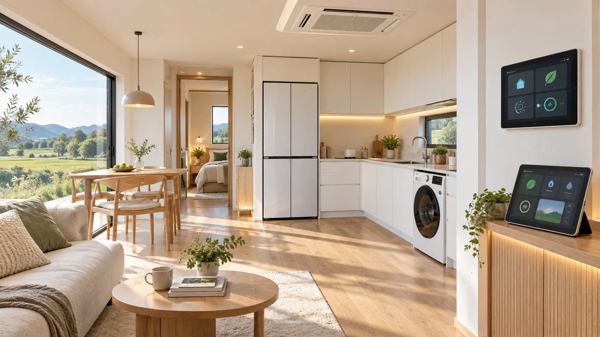
MY HOME14평 LG 스마트 단독주택
90평 주택부지에 14평 LG 스마트 코티지와 정원·데크·세대별 주차공간을 계획합니다.
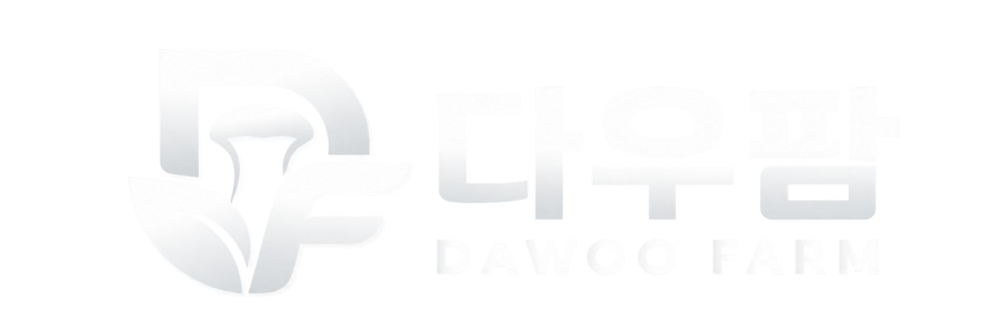
JECHEON SMART FARM VILLAGE
3억 5,000만원으로 참여하는 집 + 스마트팜 14평 LG 스마트 코티지와 40평 꽃송이버섯 외 2종 재배시설 충북 제천시 청풍면 광의리에 조성하는 19세대 주거 연계형 스마트 공동영농 개발사업입니다
HOME + FARM
90평 주택부지의 14평 LG 스마트 코티지, 40평 꽃송이버섯 외 2종 재배시설, 생산부터 판매·정산까지 이어지는 공동 운영 체계. 총 매입면적 6,563.04평 중 3,350평에 19세대의 주거와 공동영농 기반을 조성합니다.

MY HOME90평 주택부지에 14평 LG 스마트 코티지와 정원·데크·세대별 주차공간을 계획합니다.
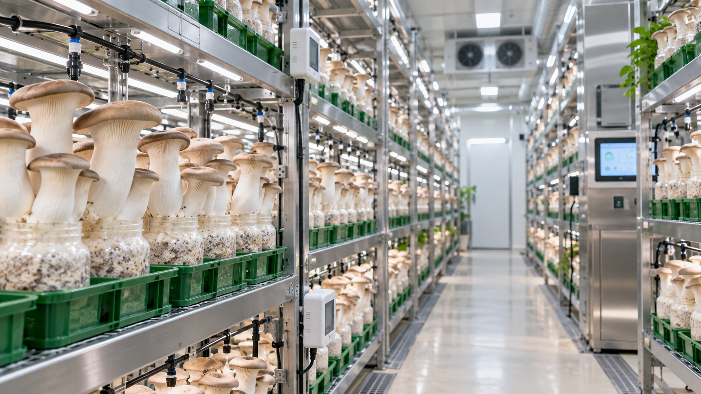
MY SMART FARM40평 전용 재배구획에서 주 20시간 이상 영농활동에 참여하며, 준공 후 3개월 차부터 10년간 월 300만원 우선지급을 계획합니다.
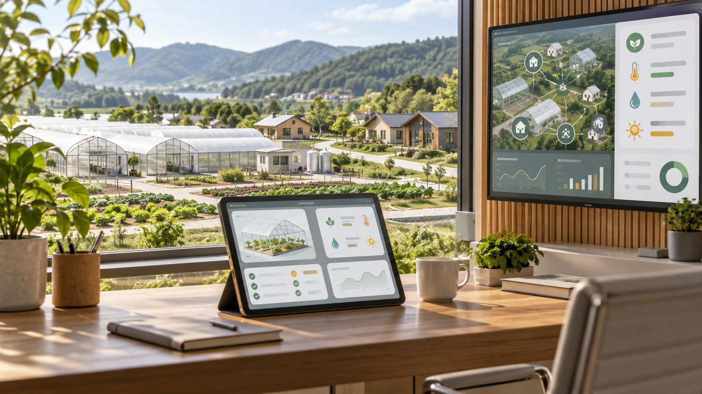
SMART MANAGEMENT
다우팜이 배지·종균 조달, 생산계획, 품질선별과 출하를 공동 관리하고
HiON이 출입·에너지·설비 상태와 점검·보수 이력을 통합 관리합니다.
참여자는 배정된 재배구획에서 계약상 영농활동을 수행합니다.
MASTER PLAN
제천시 청풍면 광의리 산 10-3 외 3,350평 사업 적용면적에 14평 LG 스마트 코티지 19동과 40평 꽃송이버섯 외 2종 재배시설 19실, 저온·선별·포장·관리시설을 분리 배치합니다.
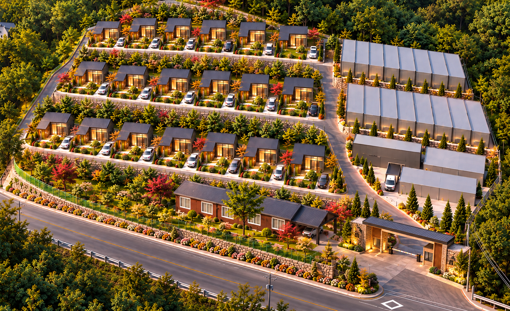
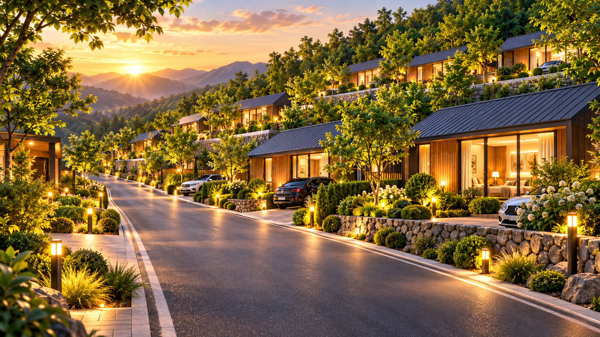
VILLAGE INFRASTRUCTURE
주거구역과 동측 영농구역을 분리하고, 재배시설에서 수확한 꽃송이버섯 외 2종이 공동 선별·저온보관·포장을 거쳐 판매처로 출하되도록 계획합니다. 내부도로와 공용 기반시설은 세대별 진입과 영농 운영을 지원합니다.
세대별 90평 주택부지에 14평 스마트 코티지와 정원·데크·주차공간, 단지 내 진입로를 계획합니다.
40평 재배시설 19실과 환경관리 시스템을 구성하고 배지·종균 조달부터 생산·출하 이력까지 공동 관리합니다.
50평 저온·냉장시설, 30평 선별·포장센터, 30평 관리·직원시설이 공동 생산과 출하를 지원합니다.
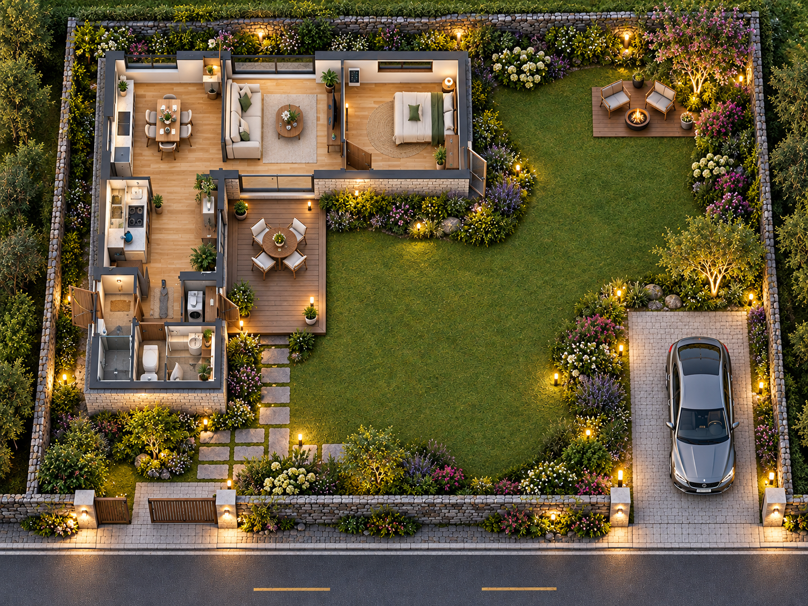
MY HOME
조합원에게는 세대별 90평 토지에 계획하는 14평 단층형 LG 스마트 코티지 1동이 제공됩니다. 거실·침실·식당·주방과 데크·정원, 세대별 주차·현관 접근을 계획하고 주거구역과 재배시설의 영역을 분리합니다. 세부 평면과 가전·설비 사양은 실시설계 및 공급계약에서 확정됩니다.
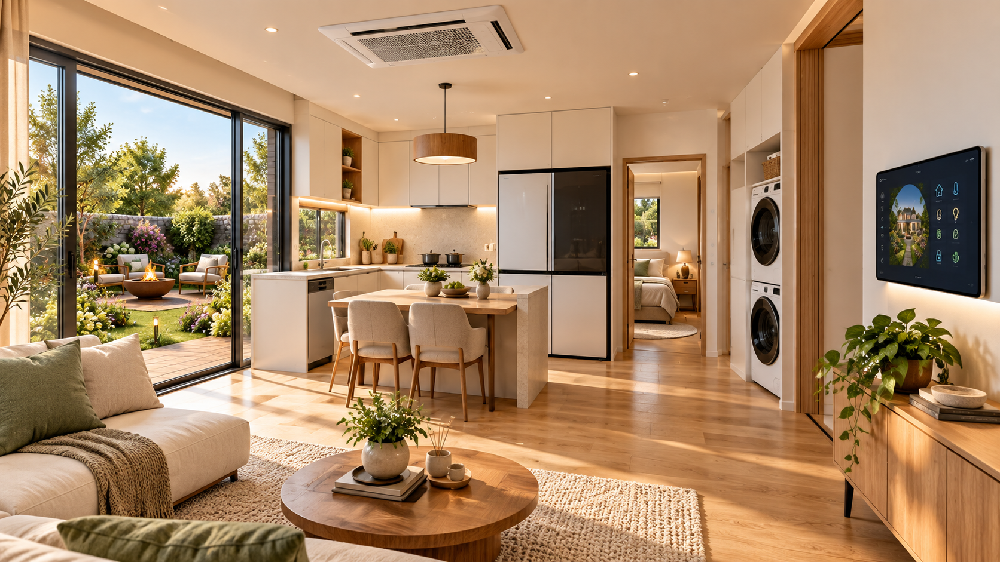
LG SMART APPLIANCE
사업계획은 14평 단층형 LG 스마트 코티지 19동을 기준으로 합니다. 거실·침실·식당·주방을 기본 생활공간으로 두고, 데크·정원과 세대별 주차공간을 연계합니다.
DETAIL COMPONENTS
주거에 필요한 온수와 난방 설비는 실시설계에서 세부 사양을 확정합니다.
14평 단층형 주택에 적합한 냉난방과 실내 환경 설비를 계획합니다.
식당과 주방을 일상생활에 편리한 하나의 동선으로 구성합니다.
주거에 필요한 생활 설비의 품목과 사양은 공급계약에서 확정합니다.
주방 안에 조리와 수납을 고려한 기본 공간을 계획합니다.
CONNECTED HOME
주거와 공용시설의 통신·출입·설비 관리 기반을 계획하며, 개별 제품과 상세 사양은 실시설계 및 공급계약에서 확정합니다.
주거와 공용시설 운영에 필요한 통신 인입을 계획합니다.
세부 스마트홈 구성은 실시설계 단계에서 확정합니다.
세대별 현관 접근과 출입 편의를 고려해 계획합니다.
주거와 영농 시설의 관리 동선이 구분되도록 계획합니다.
SMART FARM
40평 스마트 재배시설 19실은 자동제어, 환기·공기순환, LED 생육조명과 공동 운영 체계로 연결됩니다. 사업계획은 실당 월매출 4,875만원의 초기 추정치를 적용했으며, 생산성·가격·수율은 시험생산과 판매계약을 통해 검증해야 합니다.
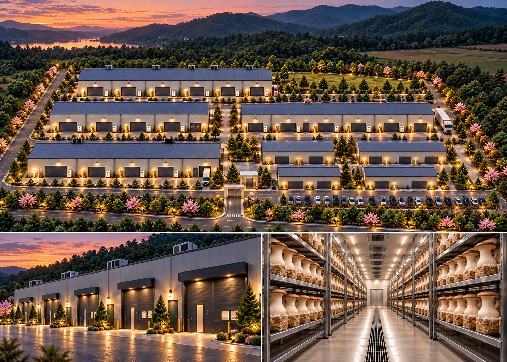
FARM PROCESS
다우팜은 생산계획과 시설운영을 관리하고, 참여자는 배정구획 확인과 계약에서 정한 영농활동에 참여합니다.
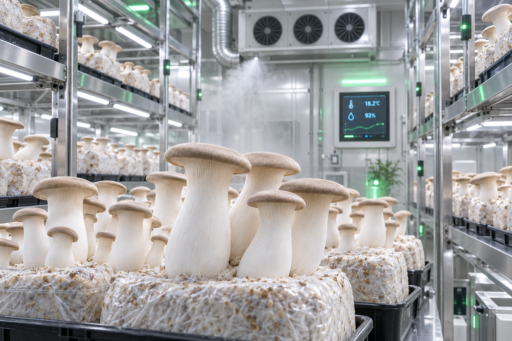
01 종균·배지 공급공동 조달한 종균과 배지를 각 재배실의 생산계획에 맞춰 공급합니다.
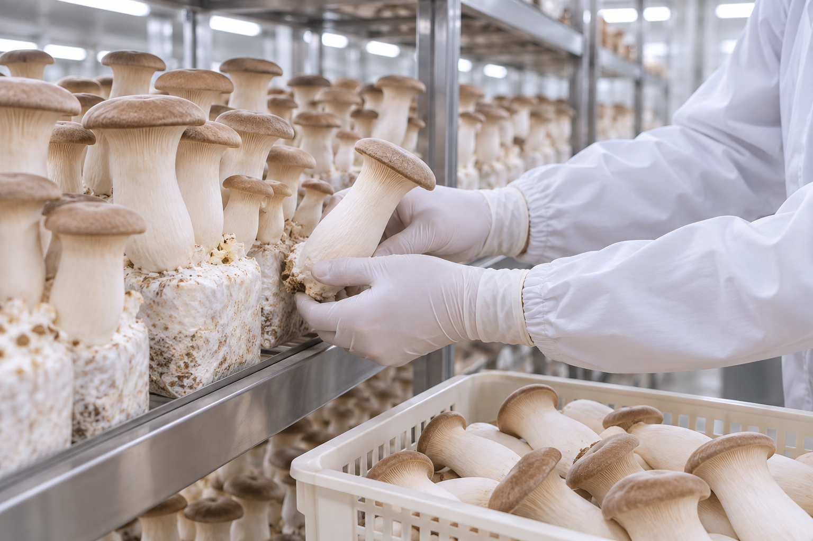
02 재배환경 관리온·습도와 환기·공조, LED 생육조명, 통합제어 설비로 재배환경을 관리합니다.
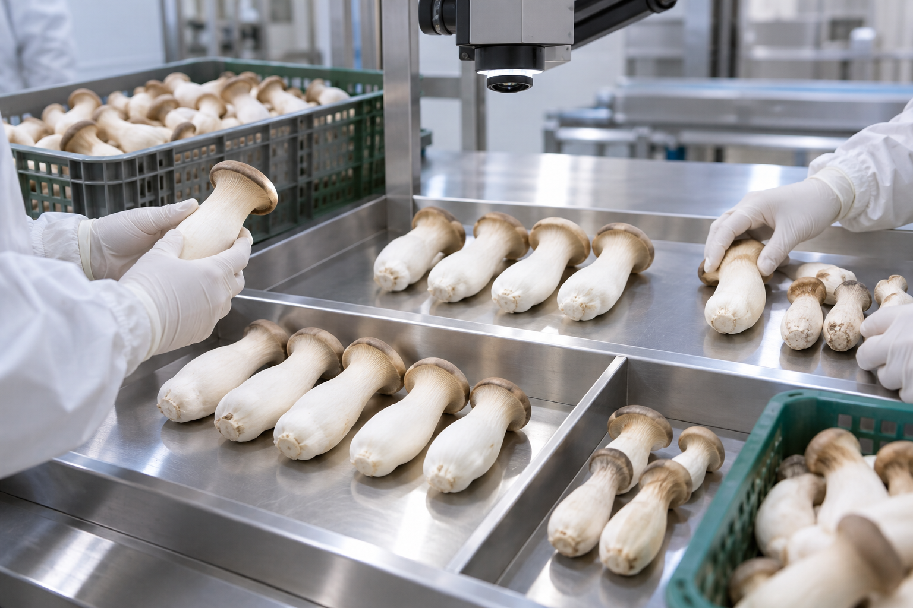
03 수확·품질 검사생육 상태와 품질을 확인하고 재배실별 수확량과 출하 이력을 기록합니다.
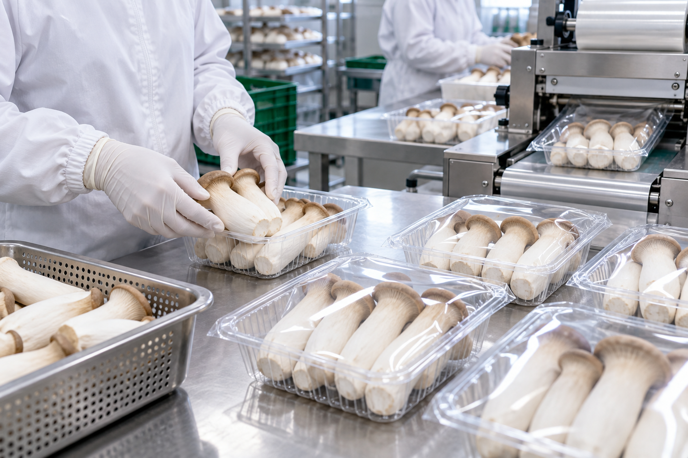
04 선별·저온보관공동 선별 기준을 적용하고 50평 저온·냉장시설에서 재고와 품질을 관리합니다.
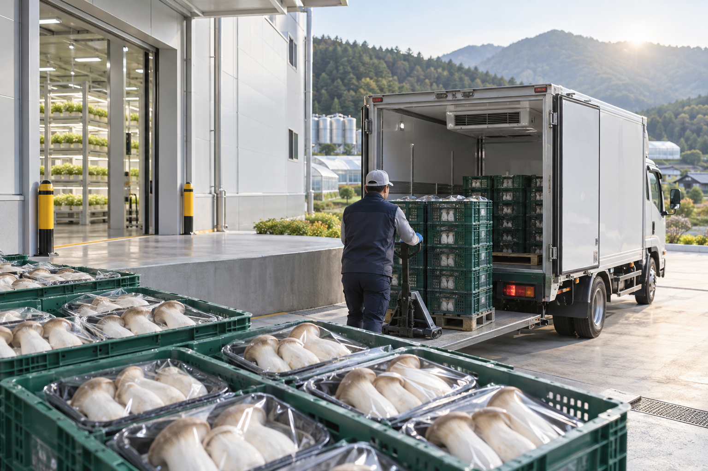
05 판매·정산공동 포장·출하 후 거래처별 단가와 수금·재고를 확인하고 조합원 수익을 정산합니다.
OPERATION
참여자는 배정구획을 확인하고 계약에서 정한 영농활동에 주 20시간 이상 참여합니다. 다우팜은 배지·종균 조달, 생산계획, 환경관리, 품질선별, 포장·출하, 시설 유지관리와 판매처 운영을 공동으로 수행합니다.
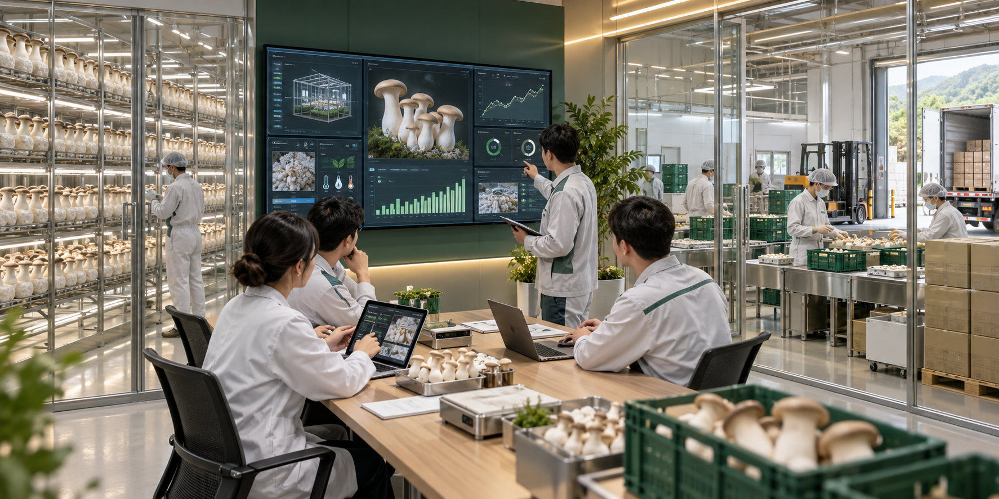
PROFESSIONAL OPERATOR
생산·운영 단계에서는 시설 상태와 품질, 재배실별 수확량·출하량·원가를 기록합니다. 판매·수금 단계에서는 출하계약과 거래처별 단가·수금·재고를 확인하고, HiON으로 출입·에너지·설비 상태와 점검·보수 이력을 통합 관리합니다.
월 300만원 우선지급은 준공 후 3개월 차부터 10년간 계획되며, 주 20시간 이상 근무조건을 전제로 합니다.Life of Smart Farm Village
19세대 주거구역과 19실 재배구역을 분리 배치하고, 공동 선별·저온보관·포장시설로 생산과 출하를 연결합니다. 주택과 재배시설, 공용 기반시설을 하나의 운영체계로 관리해 안정적인 주거환경과 공동영농 기반을 조성합니다.
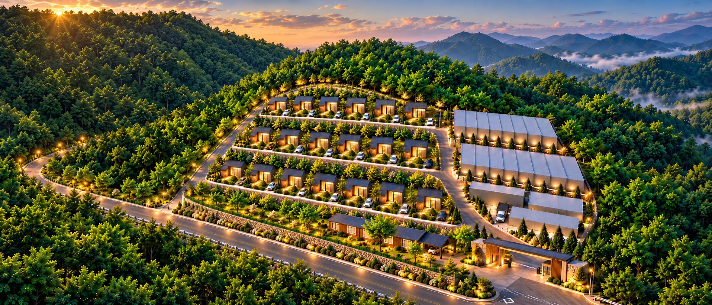
14평 LG 스마트 코티지와 정원·데크·세대별 주차공간을 계획합니다.
참여자는 배정구획을 확인하고 주 20시간 이상 영농활동에 참여합니다.
저온·선별·포장시설이 수확물의 품질관리와 출하 준비를 지원합니다.
출입·에너지·설비 상태와 장애 접수·점검·보수 이력을 관리합니다.
WHY DAWOO FARM
사업계획은 연 매출 111.15억원, 생산·운영원가 50.02억원, 조합원 우선지급 6.84억원을 가정합니다.
이에 따른 연간 배분대상 수익 54.29억원은 초기 추정치이며, 실제 수익은 생산량·판매단가·원가와 가동률에 따라 달라질 수 있습니다.
Dawoo LG Smart Farm Village Jaecheon
14평 단독주택과 40평 전용 재배구획, 공동 생산·판매·시설관리 체계를 확인해 보세요.
19명의 조합원과 함께 시작합니다. 1인 참여금 3억 5,000만원.